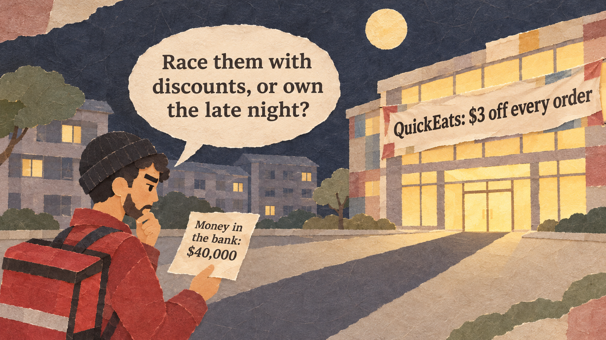
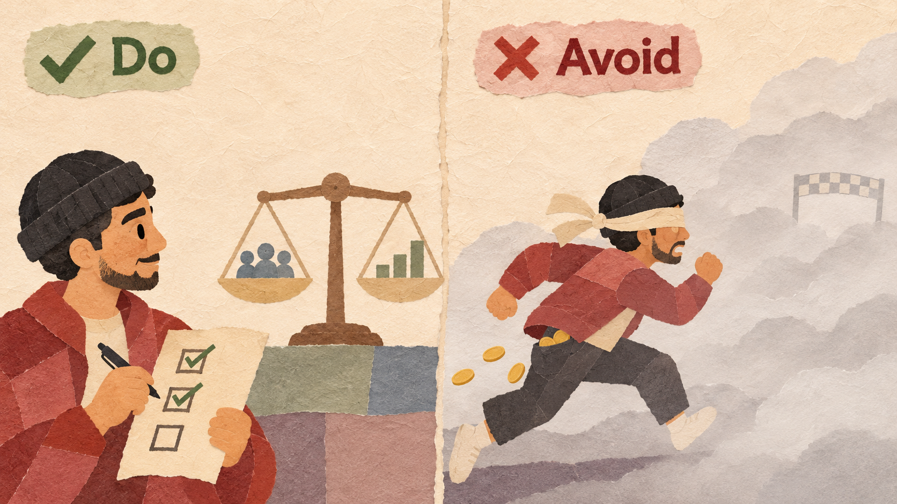
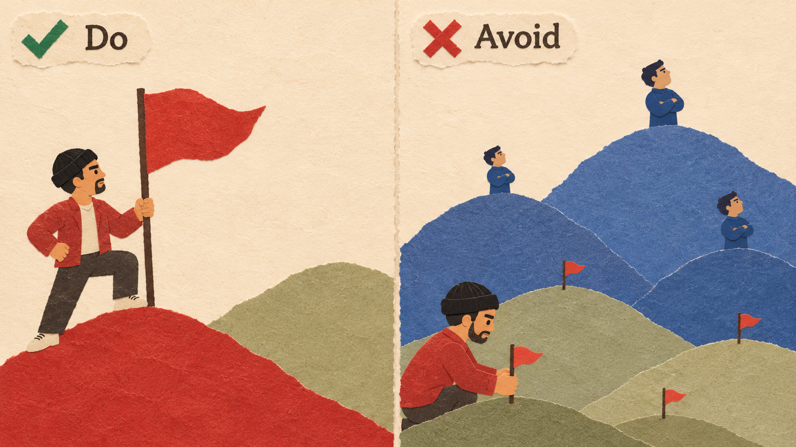
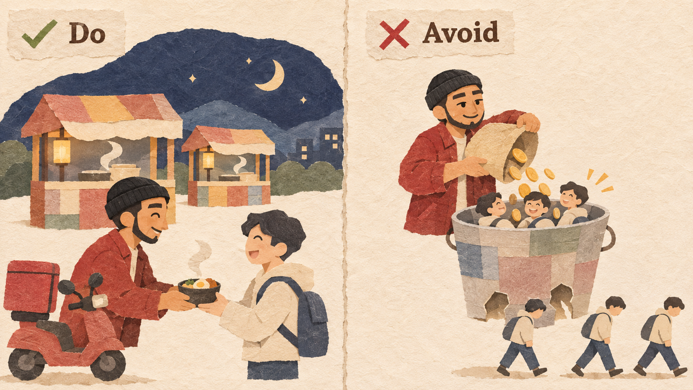
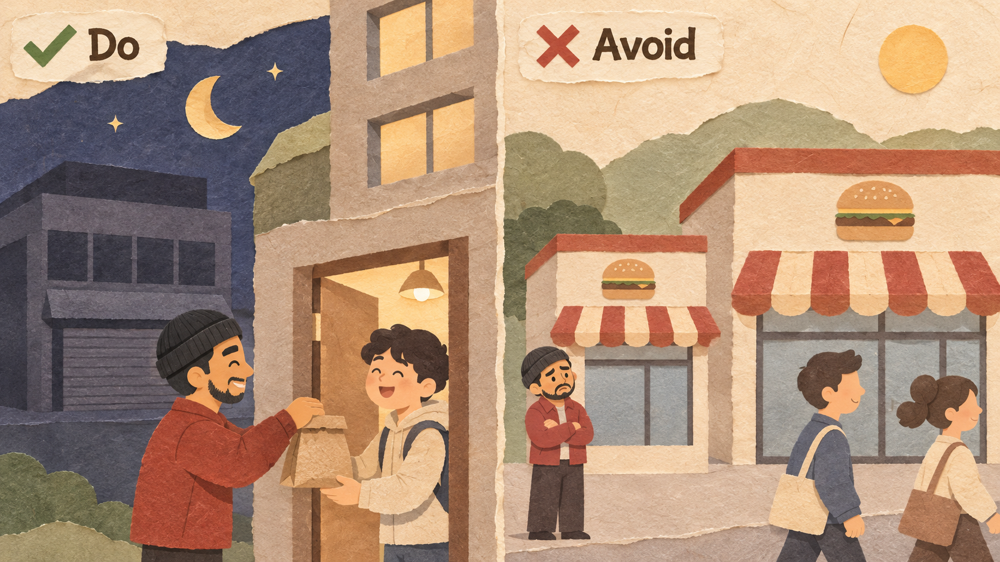

LateBite is Omar's food-delivery app for students, the only one open after 11 pm. QuickEats, a much bigger rival, now gives $3 off every order. 60% of LateBite users also have QuickEats.
| ONE MONTH | LATEBITE | QUICKEATS |
|---|---|---|
| Orders | 6,000 | 9,000 |
| Hours open | 6 pm - 3 am | 10 am - 11 pm |
| Restaurants | 25 | 60 |
| Orders after 11 pm | 2,500 | 0 |
| Money left from each order | $2 | Not known |
| Money in the bank | $40,000 | Large funding |
Some markets tip: one platform ends up with almost all customers. This happens when a bigger network is clearly better, using two platforms is hard, and most users want the same thing. There, racing to lead, one local market at a time, can make sense. But many markets do not tip, and racing with discounts only burns money. There, choose a niche and be clearly different.
Three conditions: a bigger network is clearly better, using two platforms is hard, users want the same thing.

60% of LateBite users already have both apps, and a second app is free. This market is unlikely to tip.
Believing "the biggest always wins everything." Many markets have two or three winners for years.
Tipping happens place by place. Be clearly the biggest in one city or campus before you spread out.

LateBite is the clear leader at night on its home campus before it opens on a second campus.
Opening on ten campuses with a few users each. A rival that leads each campus wins them one by one.
Users who come only for a discount leave when it ends. Spend on things that stay: speed, choice, quality.

Instead of $3 off, LateBite signs 10 more late-night restaurants and promises delivery in 20 minutes.
Matching a rich rival's discount. Your cash runs out first, and users switch back.
Find the customers the leader serves badly, and become the best choice for them.

LateBite focuses on 11 pm to 3 am, when QuickEats is closed, and delivers to the dorm room door.
Copying the leader's product at a lower price. Users have no reason to choose the smaller copy.
Online auctions can tip: buyers go where most sellers are, and sellers go where most buyers are. Yahoo! Japan opened its auction site in 1999, a few months before eBay entered Japan, and grew quickly. By 2002 eBay had only about 3% of the Japanese online auction market, and it closed its Japanese site in March 2002.
Dating apps do not tip to one winner: many people use two or three apps, and people want different things. Bumble, started in 2014, chose to be different: women send the first message. In February 2021 Bumble became a public company, and its Bumble app had about 1.1 million paying users.
Groupon sold daily discount deals from local shops and grew very fast; in December 2010 it reportedly turned down about $6 billion from Google. But hundreds of similar deal sites appeared, and shoppers and shops used several of them. It went public in November 2011 at $20 a share; a year later its shares had lost more than three-quarters of their value.
In August 2017, MoviePass let members see one movie a day for $9.95 a month, and paid theaters the full ticket price itself. Members rose to more than 3 million. It hoped size would make theaters share their money. Instead AMC started its own subscription in June 2018. MoviePass ran out of money and closed in September 2019.
| EXAMPLE | RESULT | THE RULE THAT DECIDED IT |
|---|---|---|
| Yahoo! Auctions Japan | Good | A market that tips; led one country fast (Rules 1 and 2) |
| Bumble | Good | A market that does not tip; chose to be different (Rule 4) |
| Groupon | Bad | Raced in a market that could not tip (Rule 1) |
| MoviePass | Bad | Bought members with a price it could not keep (Rule 3) |
Market share = our sales / all sales in the market x 100
Multi-homing rate = our users who also use a rival / our users x 100
Months of cash = money in the bank / monthly loss
Profit = monthly profit x number of months - one-time cost
A decision rule says which result would make you change the plan (Session 1.1).
Six markets:
| MARKET | ANSWER | WHY |
|---|---|---|
| (a) Photo social network | Likely | Leaving means leaving your friends |
| (b) Taxi apps | Unlikely | Riders and drivers use several apps |
| (c) Office operating systems | Likely | Files and software must work together |
| (d) Food delivery | Unlikely | A second app is free |
| (e) Rare-item auctions | Likely | Everyone wants the one place with everyone else |
| (f) Coffee shops | Unlikely | No network effect |
6,000 orders a month / $2 left from each order / $40,000 in the bank / 60% of users also use QuickEats
$3 off every order. Orders rise to 10,000 a month while the discount lasts.
When it ends, orders fall back to about 6,500.
$12,000 once: 10 more late-night restaurants and door delivery in 20 minutes.
Late-night orders rise by 1,500 a month (2,500 to 4,000). No discount.
Explain winner-takes-all markets, tipping, and multi-homing.
Test whether a market can tip; measure share, multi-homing, and months of cash.
Compare a race with a niche plan and write a decision rule.
Eisenmann, T., Parker, G., & Van Alstyne, M. W. (2006). Strategies for two-sided markets. Harvard Business Review.
Arthur, W. B. (1989). Competing technologies, increasing returns, and lock-in by historical events. The Economic Journal.
Internet News (2002, February). eBay enters Taiwan market, exits Japan.
Fortune (2021, February 11). Bumble IPO. CNN Money (2010, December 3). Groupon turns down Google.
NPR (2019, September 14). MoviePass has officially shut down.